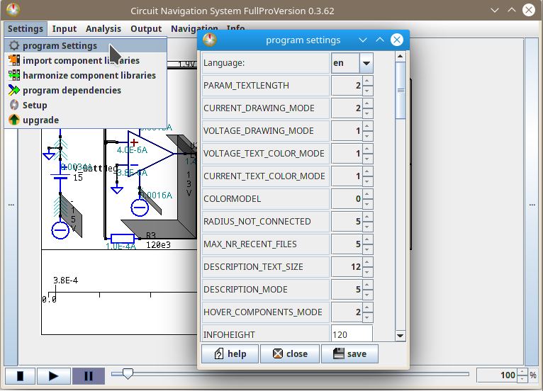

Settings Dialog
In this dialog, you can edit several parameters. These parameters define...
1. how currents and voltages are drawn
2. how other things are drawn
3. how simulations shall be handled
3a. how the editor shall be handled
4. parameters about the user interface
5. video options
6. other

1. current and voltage drawing parameters
PARAM_TEXTLENGTH ,
CURRENT_DRAWING_MODE ,
VOLTAGE_DRAWING_MODE ,
VOLTAGE_TEXT_COLOR_MODE ,
CURRENT_TEXT_COLOR_MODE ,
VWRITE_MIN_LENGTH,
MAX_VOLT_HEIGHT ,
MAX_VOLT_WIDTH ,
MAX_AMP_ARRWIDTH ,
MIN_AMP_ARRWIDTH ,
V_AQUEDUCT_HEIGHT ,
V_SHINING_WIDTH ,
I_ARROW_WIDTH ,
I_ARROW_THICKNESS ,
I_ARROW_DISTANCE ,
PARAM_TEXTLENGTH is the default number of significant decimals, that describe the independent parameter, the voltages and the currents. The actual number is rounded to have these number of decimals. For example, if there is a current of 1.2345*10^-3A and the number of decimals is 3 then the text shown will be 1.23E-3A
It is a default number as stated above, because it is set by default each time you open an analysis dialog, but the numbers shown each time can also be modified there.
CURRENT_DRAWING_MODE is default current drawing mode. This default mode is set each time you open an analysis dialog, but you can select an other mode individually in that dialog.
Value 0 is not drawing currents at all. Value 1 is drawing some currents only. Value 2 is trying to* draw all currents.
*"trying to draw all currents" means that the program can not find out some currents on some circuits. For example, if a wire is connected to flags only, but not to "real" components, then the currents through that flag is not measured, so the program does not know the current through that wire. If you are unsure whether a current is zero or just not known to the program, then you can add a shunt resistor or a 0-V-source, because the current through these components are calculated in usual simulations.
VOLTAGE_DRAWING_MODE is is default voltage drawing mode. This default mode is set each time you open an analysis dialog, but you can select an other mode individually in that dialog.
Value 0 is not drawing voltages at all. Value 1 is drawing voltages as aqueducts only. Value 2 is drawing voltages as shining wires.
VOLTAGE_TEXT_COLOR_MODE defines the color in which the voltage texts are drawn. The voltage texts are for example "3.1 V" when a node is at 3,1 volt above ground level:
Value -2 is drawing voltage texts in white. Value -1 drawing voltage texts in black. Value 0 is drawing voltage texts in the same color as the node is colored in. Value 1 is like value 0, but a bit darker. Value 2 is like value 0 but a bit brighter.
CURRENT_TEXT_COLOR_MODE defines the color in which current text are drawn. The current texts are for example "1.23 A"
VWRITE_MIN_LENGTH is the minimal length a wire must have, so that the voltage text is shown on it.
For example if you set this value to 15, and there is one node of which the longest wire has a length of only 10 pixel, then this node will not have the voltage descibed.
MAX_VOLT_HEIGHT is the maximal height of the aqueducts, used to calculate the maximal height in range functions for aqueducts.
MAX_VOLT_WIDTH is the maximal width of shining wires, used to calculate the maximal width in range functions for the shining wires.
MAX_AMP_ARRWIDTH is the maximal width of currents, used to calculate the maximal width in range functions for currents width.
MIN_AMP_ARRWIDTH is the minimal width of currents, used to calculate the minimal width in range functions for currents width. (This minimal value can be set to zero, and often zero is a useful value to set this parameter to. But in some circuits, you want to find out the direction of the current flow even when the current value is very small. In these cases, setting this parameter to a value larger than 0, for example 3, is recommended to do.
V_AQUEDUCT_HEIGHT is the function h=f(U) where U=voltage value of a node and h=height of the aqueduct over that node.
V_SHINING_WIDTH is the function sw=f(U) where U=voltage value of a node and sw=width of the shining wire over that node.
I_ARROW_WIDTH is the function aw=f(I) where I=current value through a wire and aw=width of the arrow over that wire.
I_ARROW_THICKNESS is the function at=f(I) where I=current value trough a wire and at= line thickness of the arrow over that wire.
I_ARROW_DISTANCE is the function ad=f(I) where I=current value through a wire and ad= distance between two subsequent arrows.
2. general drawing parameters
COLORMODEL ,
RADIUS_NOT_CONNECTED ,
INFOHEIGHT ,
INDEPLINE_DATAPOINTS ,
DRAW_FILEDAY ,
DRAW_FILETIME ,
ENABLE_STROKES - see also STROKE_THICKNESS,
WRITE_EESCHEMA_PORTS ,
KEEP_ZERO_CONN ,
TRANSPARENT_FRAME_AniCAD ,
TRANSPARENT_FRAME_IMG ,
STROKE_THICKNESS - see also ENABLE_STROKES,
DATE_FORMAT_DAY ,
DATE_FORMAT_TIME ,
SCALE_X_PC_EESCHEMA,
SCALE_Y_PC_EESCHEMA,
SCALE_X_PC_QUCS,
SCALE_Y_PC_QUCS,
SCALING_PERCENTAGES,
DELTA_CONN_EAGLE,
DELTA_CONN_QUCS,
DELTA_CONN_EESCHEMA,
IMAGE_QUALITY
COLORMODEL is the set of colors of background color and default node colors, and frame settings that make the general appearance of the image.
There are four different types of color models:
Value 0 is the standard model, called "day mode". It has a white background a dark frame and dark nodes. It is available in all upgrade versions.
Value 1 is the "sunset mode". It has a grey background, and bright frame and nodes. It is available in "Hobby"-upgrade and above.
Value 2 is the "transparent mode". It has a transparent background, and no frame. You can use that transparent circuit for example to place it over your individual logo. It is available in "SemiPro"-upgrade and above.
Value 3 is the "night mode". It has a black background, and white frame and nodes. This one is the optimal solution for long working hours in front of the screen. It is available in the "FullPro"-upgrade.
(TODO: add image)
RADIUS_NOT_CONNECTED describes the red circle that is drawn around the ends of wires that are not connected.
When this parameter is set to 0, then the red circles are not drawn.
When it is larger than 0, then the circle is drawn with the given number of pixels around that not connected end.
When it is smaller than 0, then the circle is drawn and filled with the given number of pixels around that not connected end.
INFOHEIGHT is the height of the information window in pixels:
The horizontal line which contains the independent parameter (time) is at the middle of the information window. So for drawing values above and below this line, the space available is half the size each. For example, if you set this parameter to 50, then you have the range -25 to -1 below that horizontal line, and 1 to 25 above that horizontal line
(TODO: add image)
INDEPLINE_DATAPOINTS is the number of marked points on the horizontal line which contains the independent parameter (time):
When set to 0 or a negative number, then no markings are placed on the line.
When set to 1, then only the start marker is placed.
When set to 2, then the start marker and the end marker are placed.
When set to a number larger than 2, then start and end markers are placed, and the additional markers are placed so that the distance between the markers are equal.
For example, if you have an analysis with the independent parameter on a range from 0ms to 10ms and INDEPLINE_DATAPOINTS is set to 2, then only the start point at 0ms and the end point at 10ms are marked. But if you set INDEPLINE_DATAPOINTS to 5, then three additional markers will be added at 2,5ms 5,0ms and 7,5ms.
(TODO add image)
DRAW_FILEDAY decides whether the date of the day, at which the schematic file was saved the last time shall be shown at the bottom right corner of the image.
The format in which it shall be displayed, can be edited in DATE_FORMAT_DAY.
DRAW_FILETIME decides whether the time whithin a day, at which the schematic file was saved the last time shall be shown at the bottom right corner of the image.
The format in which it shall be displayed, can be edited in DATE_FORMAT_TIME .
ENABLE_STROKES decides whether an individual stroke thickness for drawing lines of wires and components shall be enabled:
When set to "no"=0, then the default line thickness of one pixel is used.
When set to "yes"=1, then the see individual line thickness of the parameter STROKE_THICKNESS is used.
WRITE_EESCHEMA_PORTS decides whether the port names of components shall be shown in circuits created by KiCad EEschema:
When set to "no"=0, then the port names will not be displayed.
When set to "yes"=1, then the port names will be displayed next to the ports.
KEEP_ZERO_CONN decides whether components that to not have a connection shall be displayed or not.
TRANSPARENT_FRAME_AniCAD decides whether the outer part of a circuit shall be drawn transparently in the program itself:
When set to "no"=0, then the outer part is drawn in the same color as the background of the image, which is set in COLORMODEL .
When set to "yes"=1, then the outer part is transparent.
TRANSPARENT_FRAME_IMG decides whether the outer part of a circuit shall be drawn transparently in exported images:
When set to "no"=0, then the outer part is drawn in the same color as the background of the image, which is set in COLORMODEL .
When set to "yes"=1, then the outer part is transparent.
STROKE_THICKNESS is the line thickness in pixels in which wires and components are drawn if ENABLE_STROKES is set to "yes"=1.
DATE_FORMAT_DAY is the format in which the date is displayed if DRAW_FILEDAY is set to "yes"=1,
see also the documentation of date formats at the oracle-java-documentation website
DATE_FORMAT_TIME is the format in which the time within a day is displayed if DRAW_FILETIME is set to "yes"=1,
see also the documentation of date formats at the oracle-java-documentation website
SCALE_X_PC_EESCHEMA and SCALE_Y_PC_EESCHEMA and SCALE_X_PC_QUCS and SCALE_Y_PC_QUCS are the scaling factors or zooming factors. The x-coordinates and y-coordinates are multiplied with these values. The values are given in percent of the original coordinate values.
The higher the value, the larger the circuit will be shown at start when opening the circuit.
You can use different values for x and y , but in that case the circuit will be displayed distorted.
See also SCALING_PERCENTAGES
SCALING_PERCENTAGES is the list of the steps which are used when you zoom in or zoom out. By zooming in (zooming out), the scaling factor is increased to the next (decreased to the previous) value. The list may only contain whole numbers, and between each of the numbers there must be a space character to separate these numbers. Also the list of numbers must be in rising order.
See also the scaling factors: SCALE_X_PC_EESCHEMA SCALE_Y_PC_EESCHEMA SCALE_X_PC_QUCS and SCALE_Y_PC_QUCS
DELTA_CONN_EAGLE and DELTA_CONN_QUCS and DELTA_CONN_EESCHEMA are the maximal distance between the coordinates of two connections at which these two connections are considered to be connected to each other. Both the x and the y difference between the two connections must be lower than the given delta to be connected.
If the given delta value is zero or a negative value, then the two connections are only considered connected to each other when they have the exact same coordinates - but that is not recommended, because the coordinates can be rounded and can therefor differ by a small value.
IMAGE_QUALITY defines the amount of antialiasing effort to create a prettier image:
0 means no effort, the image is created faster, but uglier (e.g. the text within the schematic diagram seems badly written).
5 means all available methods will be used, so that the image is created prettier, but that needs a bit of computation power.
Somewhat modern computers should have more than enough computation power for this, a high value is recommended unless you have a very old computer or a really large circuit.
3. simulation related parameters
IGNORE_LIB_WARNINGS ,
IGNORE_LIB_ERRORS ,
SHOW_ANALYSIS_WARNINGS ,
SHOW_ANALYSIS_ERRORS ,
SIMULATION_STARTTIME ,
SIMULATION_TIMESTEP ,
SIMULATION_ENDTIME,
SIMULATION_STARTFREQUENCY ,
SIMULATION_FREQUENCY_STEPS ,
SIMULATION_ENDFREQUENCY,
IGNORE_LIB_WARNINGS decides whether warning messages that are specified in the component library for specific component parameters are shown or ignored:
When set to 0=no, then these messages are shown. When set to 1=yes then these messages are ignored.
IGNORE_LIB_ERRORS decides whether error messages that are specified in the component library for specific component parameters are shown or ignored:
When set to 0=no, then these messages are shown. When set to 1=yes then these messages are ignored.
Attention: It is highly recommended to set this parameter to 0=no, because otherwise you might suppress a message showing the reason for a failed simulation.
SHOW_ANALYSIS_WARNINGS decides whether warning messages that result in running the circuit simulator (NGspice) are shown or ignored:
When set to 0=no, then these messages are ignored. When set to 1=yes then these messages are shown.
SHOW_ANALYSIS_ERRORS decides whether error messages that result in running the circuit simulator (NGspice) are shown or ignored:
When set to 0=no, then these messages are ignored. When set to 1=yes then these messages are shown.
Attention: It is highly recommended to set this parameter to 1=yes, because otherwise you might suppress a message showing the reason for a failed simulation.
SIMULATION_STARTTIME and SIMULATION_TIMESTEP and SIMULATION_ENDTIME are the three default time parameters that are pre-selected at the transient simulation.
(The transient simulation is also described in chapter 15.3.9 of the ngspice-manual)
These parameters are set, when you open the analysis dialog for simulation. You can edit each of these parameters in that analysis dialog. But these time parameters will be set the first time when you open that dialog. If it is not the first time you open that dialog, the dialog will pre-select the parameters from the last time you have selected them.
These time parameters are measured in seconds. You can append a little s for second, but you can also skip it.
You can use m for milli, u for micro, n for nano, p for pico, k for kilo etc: For example
2u means two microseconds, and
3.45ms means three point four five milliseconds.
You can also use the En, where n is a whole number to say "times ten to the power of n"; For example
2E-6 means two times ten to the power of -3 seconds, which is two microseconds, and
34.5E-4 means thirty-four point five times ten to the power of -4 seconds which is equal to three point four five milliseconds.
SIMULATION_STARTFREQUENCY and SIMULATION_FREQUENCY_STEPS and
SIMULATION_ENDFREQUENCY are the three default parameters for ac analysis. (The ac analysis is also described in chapter 15.3.1 of the ngspice-manual.) These parameters are set, when you select the ac analysis in the analysis dialog for simulation.
The start and end parameters are values in Hertz. The parameter SIMULATION_FREQUENCY_STEPS is the number of steps (per octave if you have selected octave, per decade if you have selected decade, or in the total linear frequency range if you have selected "linear").
3a. editor related parameters
DEFAULT_FRAME_WINDOW ,
DEFAULT_FRAME_WINDOW
Is a text that defines which frame shall be used by default.
This text must be always in the form:
frame=[frame] x1=[intx1] y1=[inty1] x2=[intx2] y2=[inty2]
where [frame] is one of the following values: constant, minimal, offset,none
and where [int__] are four integer values. They can be in any order.
For example, frame=offset x1=200 x2=200 y1=150 y2=150 defines a frame around the circuit
which leaves just enough space to add more components. Therefor it is useful for editing circuits.
(In this example that is 200px at left and right, and 150px at top and bottom, when the circuit is
displayed at 100% scaling.)
More infos about the frame, you can see in the frame-editing window in "Navigation"->"edit frame".
4. user interface parameters
ENABLE_ICONS ,
DEFAULT_DIR,
CIRCUIT_DIR,
VIDEO_DIR,
IMAGE_DIR,
QR_AUTO_LOAD_MODE,
AUTO_LOAD_MODE,
AUTO_SAVE_MODE,
USE_FX_FILESELECTOR
ENABLE_ICONS defines whether buttons shall have icons, such as the settings icon:
when set to yes, then icons are shown. When set to no, then icons are not shown.
DEFAULT_DIR the directory which is opened at start when you select a "normal" file in the file selection window.
CIRCUIT_DIR the directory which is opened at start when you select a circuit in the file selection window.
VIDEO_DIR the directory which is opened at start when you select a video in the file selection window.
IMAGE_DIR the directory which is opened at start when you select an image in the file selection window.
QR_AUTO_LOAD_MODE Decides whether circuits found via QRcode shall be opened automatically. There are 3 available modes:
0 -> The circuit will not be loaded automatically
1 -> Each time a circuit is found via QRcode, the user is asked via dialog whether you want to open it
2 -> The circuit will be loaded automatically
See also in the documentation for QRcodes.
AUTO_LOAD_MODE Decides whether the settings of a circuit, which are saved in the circuit settings in .cns files, shall be loaded automatically, when a circuit is opened.
AUTO_SAVE_MODE Decides whether the settings of a circuit, which are saved in the circuit settings in .cns files, shall be saved automatically, when a circuit is closed.
USE_FX_FILESELECTOR JFXfileselector is an external sub-program. The user can use it to open files and directories, such as the circuit files. That external program is a bit slower than the internal file selector dialogue, but it is prettier and more user friendly than the simple internal dialogue.
5. video parameters
VIDEO_INPUT_OPTIONS,
VIDEO_OUTPUT_OPTIONS,
VIDEO_INPUT_OPTIONS is text that is used as default value for input parameters of ffmpeg. You can overwrite the value in each dialog for video creating, but this value here is stored permanently and is set each time you open a new such dialog.
Before you change the value of VIDEO_INPUT_OPTIONS, then you should know what you are doing (e.g. by reading the ffmpeg documentation and test your parameter multiple times in the said dialog.
VIDEO_OUTPUT_OPTIONS is text that is used as default value for input parameters of ffmpeg. You can overwrite the value in each dialog for video creating, but this value here is stored permanently and is set each time you open a new such dialog.
Before you change the value of VIDEO_OUTPUT_OPTIONS, then you should know what you are doing (e.g. by reading the ffmpeg documentation and test your parameter multiple times in the said dialog.
6. other parameters
DELAY_MS , see also FIXED_DELAY,
DELETE_WORKING_TMP_ON_EXIT ,
ACTIVATE_HOVERING ,
ALLOW_OPENENDS ,
FIXED_DELAY - see also DELAY_MS,
USE_EESCHEMA_TIMESTAMP - see also MAKE_NAMES_UNIQUE,
MAKE_NAMES_UNIQUE - see also USE_EESCHEMA_TIMESTAMP,
DELAY_MS is the delay between two images when playing the circuit analysis as animation within the program. In other words, it determines the speed of that animation. see also FIXED_DELAY,
DELETE_WORKING_TMP_ON_EXIT decides whether the temporary files that are created within a session of this program are deleted as soon as the program is terminated:
When set to 0=no, then the temporary files will not get deleted as soon as the program is terminated.
(But they are still temporary files: The will be deleted as soon as you shut down your computer. In the rare cases in which you might want to keep these files even after shutting down the computer, you should copy them out of your system's temporary directory)
When set to 1=yes, then the temporary files will get deleted as soon as the program is terminated.
ACTIVATE_HOVERING decides whether the hovering functionality is activated at program start.
ALLOW_OPENENDS decides whether an open end, an unconnected pin of a component is considered an error or not:
When set to 0=no, then a component which has an open end is considered an error in the circuit.
When set to 1=yes, then a component which has an open end will only result in a warning message.
Attention: This parameter is about unconnected pins of components only - not about unconnected pins of wires. So if you want to create an open end on purpose, then you can do so by connecting the component's pin with a short wire, and leave the other end of the wire open.
See also this image:

FIXED_DELAY decides whether the time needed to create an image shall be considered in the frame rate, so that the time distance between two subsequent images is fixed or not:
When set to no=0, then the time to create images is not considered into the frame rate. So the video in the program will be played slightly slower than you have specified in DELAY_MS .
When set to yes=1, then the time to create images is considered into the frame rate. So the video in the program will be played in the speed specified in DELAY_MS , but choosing this option needs slightly more resources, since it requires the algorithm to estimate the needed time of creation of images.
USE_EESCHEMA_TIMESTAMP decides whether the component names in circuits created with KiCad EEschema shall be set by their individual timestamp. This is one method to individualize component names automatically. The other one is MAKE_NAMES_UNIQUE .
MAKE_NAMES_UNIQUE decides whether component names shall be individualized by adding a number at the end of components which otherwise would not have an individual component name.This is one method to individualize component names automatically. The other one is USE_EESCHEMA_TIMESTAMP .
Info: You need individual component names in order to simulate the circuit containing the circuit. If there are two component that have the same component name, then the NGspice simulator probably will throw an error. So you either can set one of these two parameters to yes=1 so that the names are individualized automatically, or you can set the component names to individual names in your schematic editor manually.